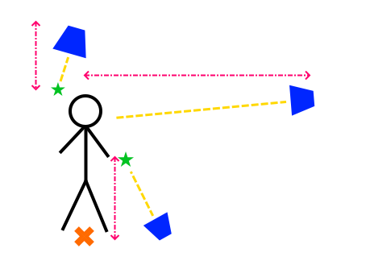

Thirdperson View Component
The Thirdperson View component is used to place an object, typically a camera, relative to another object with clear line of sight. The component will make the owner object look at the target point and place it at a certain distance. When there are physical obstacles between the camera and the target, it moves the owner object closer.
Setup
Reference the component properties below for more details.
In the diagram below:
- the blue trapezoids represent possible camera positions
- the orange cross is the
TargetObject - the green stars are
TargetOffsetHighandTargetOffsetLowrespectively - the pink lines represent
MaxDistanceUp(left),MaxDistanceDown(bottom) andMaxDistance(from left to right)

When the view is rotated to look downward, its maximum distance is determined by MaxDistanceUp. In this example it therefore moves clsoer. It also focuses more on the TargetOffsetHigh point. When it is rotated to look upward, its distance is determined by MaxDistanceDown. It also focuses more on TargetOffsetLow.
When the view is rotated to look straight, it zooms out up to MaxDistance. It focuses at the point in between TargetOffsetLow and TargetOffsetHigh.
Component Properties
TargetObject: An object path identifying the object that this object should look at. It may be a parent object, in which case the view will also move and rotate with that object. The default value of..references the direct parent. Often the target object is positioned directly on the floor. Use the offset values below to adjust which point to look at exactly.TargetOffsetHigh,TargetOffsetLow: Two offest positions relative to theTargetObject. Setting these to non-zero values allows to look for example at a point slightly before or behind the target object, or even offset the center sideways. If the view looks down from above, it focuses onTargetOffsetHigh, if it looks up from below it focuses onTargetOffsetLow. In between the two points are interpolated. This allows to have the camera look over the shoulder of a character when viewing from above, and up behind its head, when viewing from below.MinDistance,MaxDistance: When there is no obstacle, the view will place the camera atMaxDistance. If there are obstacles, the camera moves in closer, but no closer thanMinDistance. Make sure that the radius of the character controller is large enough to prevent the camera from being pushed into surrounding geometry.MaxDistanceUp,MaxDistanceDown: The more that the camera is looking at the target from above or below, the more it will useMaxDistanceUporMaxDistanceDownrather thanMaxDistance. This allows to pull the camera closer or move it even further out, when viewed from these extreme angles.MinUpRotation,MaxUpRotation: The minimum and maximum angle that the view may look at the target object from above and below. An angle of zero means looking straight ahead.CollisionLayer: The collision layer to use for checking collisions with the environment. Only static geometry is checked, dynamic geometry gets ignored.SweepWidth: The radius of the sphere that is swept backwards to determine collisions with the environment. Too small values mean the camera may be able to move through small openings, which will move the camera back and forth frequently.ZoomInSpeed,ZoomOutSpeed: The speed with which the camera zooms in when it encounters an obstacle, and out when the obstacle has passed.
Scriptable Functions
void RotateUp(angle): Makes the camera rotate up or down by the given angle within the defined boundaries.